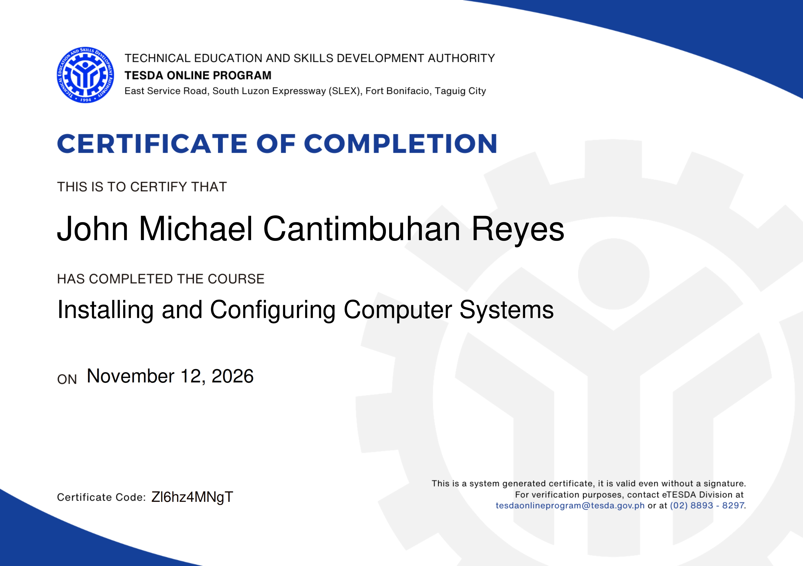
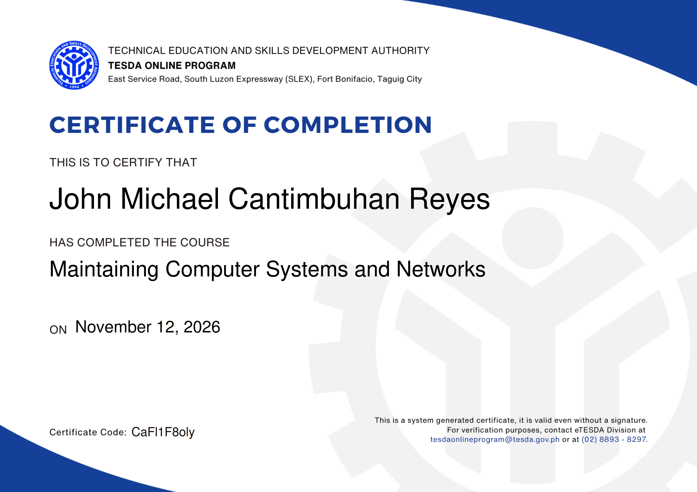
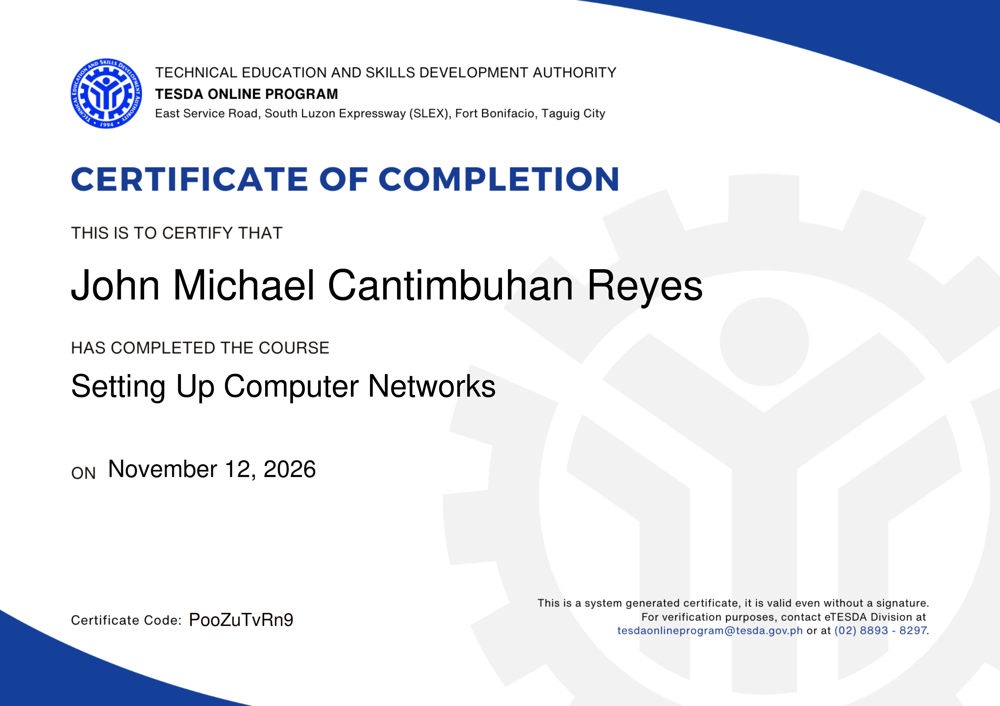
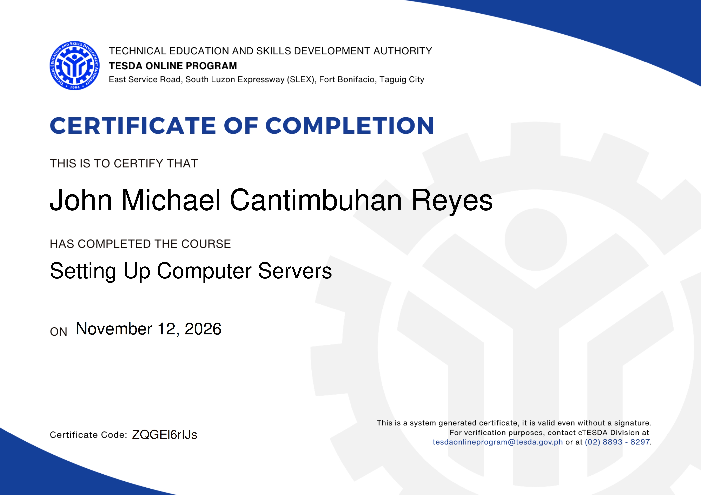

Certifications & Training
Professional development and technical learning
This page is reserved for certificates, training programs, and professional development related to IT support, systems administration, networking, and information technology.
Installing and Configuring Computer Systems
Provider: TESDA Online Program | Completed: November 12, 2026
Certificate Code: ZI6hz4MNgT

Introduction to Computer Systems Servicing
Provider: TESDA Online Program | Completed: November 12, 2026
Certificate Code: f8k5LNdaUu
Maintaining Computer Systems and Networks
Provider: TESDA Online Program | Completed: November 12, 2026
Certificate Code: CaFI1F8oly

Setting Up Computer Networks
Provider: TESDA Online Program | Completed: November 12, 2026
Certificate Code: PooZuTvRn9

Setting Up Computer Servers
Provider: TESDA Online Program | Completed: November 12, 2026
Certificate Code: ZQGEI6rlJs
